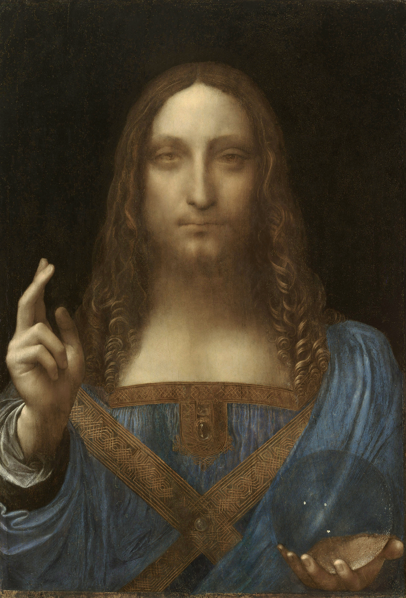

60 FPS (TURBO)
Matrix
🔮 Academic Oracle
❯
❮ CLOSE
MODE: ORIGINAL ILLUSION
CORE: CALIBRATION METRIC
🩻
🪞
❤️
🧭
☠️
🌀
📐
▲ ASK ORACLE
🫀
🔊
📡
METABOLIC PATHWAYS & BIOPHYSICAL ANALYSIS
Bernardino Luini Spectrum Co-Registration
×
⚠️ QUANTUM TELEMETRY GATEWAY ACTIVE
Tepeden bakış modu aktifken (
TOP VIEW
), Luini tablosundaki aks açıları ile 3D plazma akış hızı çapraz eş zamanlanır.
📡 ACADEMIC QUERY TERMINAL (Ateş / Su / Hava / Toprak Rezonansı):
SEND